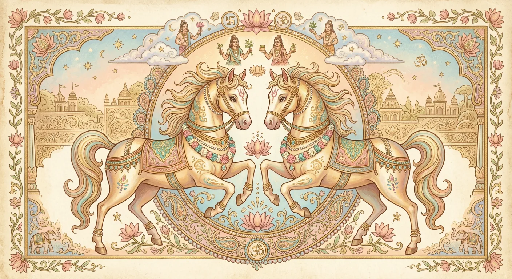

第1パダ
開拓者タイプ。思い立ったら即行動、スピード感はナクシャトラ随一です。
Ashvini
黄道のいちばんはじまりに位置する、夜明けの星宿。
疲れた心と体に、すっと風を通してくれる「癒し手」の星です。

STORY & MYTH
「アシュヴィニー」は、サンスクリット語のアシュヴァ（馬）から生まれた名前。 「馬をもつもの」という意味で、牡羊座の頭にあたる星々を、古代インドの人々は馬の頭に見立てました。
神格は、馬を駆る双子の神さま「アシュヴィニー・クマーラ」。 その誕生には、こんな物語があります。太陽神スーリヤの妻サラニユーは、夫のまぶしすぎる光に疲れ、 雌馬の姿になって遠くへ身を隠しました。スーリヤは雄馬となって彼女を追い、 ふたりのあいだに生まれたのがこの双神です。太陽と馬の子ども、それがアシュヴィニーなのです。
双神は神々のお医者さまとして知られ、夜明けの女神ウシャスよりも先に黄金の馬車で駆けつけ、 傷ついた者を癒したと伝えられています。古代インドでいちばん速かった馬は、 「誰よりも早く、痛みのそばへ」という、この宿の優しさの象徴でもあります。
27あるナクシャトラの先頭に立つこの宿は、「はじまり」そのもの。 新しいことをためらわずに始める勇気、そして誰かの痛みにいち早く気づいて駆け寄る優しさ。 その両方を併せもつのが、アシュヴィニーの魅力です。
PADA — こまかな個性のちがい
開拓者タイプ。思い立ったら即行動、スピード感はナクシャトラ随一です。
行動力に美意識と現実感覚が加わり、はじめたことを形にできる人。
軽やかな知性派。言葉や情報で人を癒す、コミュニケーションの才能。
癒し手の性質がもっとも豊かに。共感力が高く、ケアの仕事に向きます。
アシュヴィニーは、空海が唐から持ち帰った『宿曜経』では「婁宿（ろうしゅく）」にあたるとされます。 インドで生まれた27宿の智慧が、密教とともに日本へ渡ってきた—— そう思うと、遠いヴェーダの星が少し身近に感じられませんか。
当サイトでは、こうした「ジョーティッシュと日本の宿曜道」の橋渡しも、 すこしずつ深掘りしていきます。
「はやく着くことより、軽やかに走り出すこと。」
アシュヴィニーの馬は、誰かを癒すために走ります。 あなたの新しい一歩も、きっと誰かの夜明けになりますように。